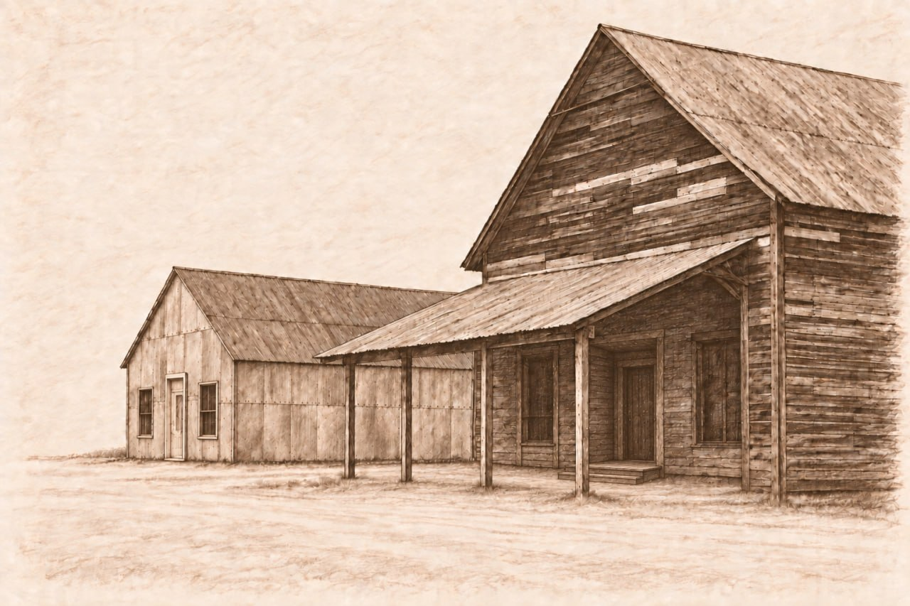
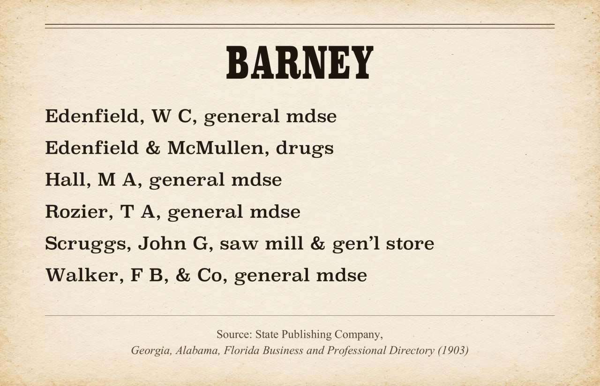

Stores, trades, and the developing town
The clearest contemporary description of Barney's commercial center appeared in the Valdosta Times on October 14, 1899. The writer called it "a rushing little town" and named W. C. Edenfield, Hall & Kendrick, Joel Hall, and Oglesby Bros. & Company in the general merchandise trade. The article also described the Oglesby mill, nearby farms, a school about two miles east, and Mitchell Brice's westward tram. The language was promotional, but the report provides a useful list of people and businesses active at the time.[20]
J. F. Hall left a Quitman store to open at Barney in March 1899. By October, the town profile named four general-merchandise businesses. Newspapers and the 1900 census also record mechanics, mill and railroad workers, physicians, teachers, merchants, and farm laborers in the district.[19][20]

Barney businesses in 1903
The 1903 Georgia, Alabama, Florida Business and Professional Directory listed six Barney businesses: W. C. Edenfield, general merchandise; Edenfield & McMullen, drugs; M. A. Hall, general merchandise; T. A. Rozier, general merchandise; John G. Scruggs, sawmill and general store; and F. B. Walker & Company, general merchandise. The Barney entry spans two printed pages in the directory.[23]

Strong probable store location. Scruggs's Barney general store appears to have stood at the northeast corner of Ninth Street and the South Georgia Railway right-of-way. On December 1, 1900, W. C. Edenfield conveyed him an approximately one-acre tract in LL278 beginning at that corner, with railway-based calls of about 210 by 200 feet. The description closely matches the tract B. H. Legg bought in 1898. Read with the directory's 1903 listing, the deed makes this the strongest known location for Scruggs's general store. The store was separate from his sawmill, gin, and other milling operations near Scruggs Pond.[23][29]
The south-side commercial strip in LL279
The brick commercial row on the south side of Main Street, then called Ninth Street, developed through a series of small conveyances in Land Lot 279. No single deed tells the whole story. The record survives in pieces: an acre at the northwest corner of the land lot, several store-sized parcels, four numbered business lots that can be located with confidence, and three eastern lots whose early chains remain incomplete.
The AME acre
On February 25, 1896, Celia A. Davis conveyed African Methodist Episcopal Church trustees a square acre at the exact northwest corner of Land Lot 279. Its north and west boundaries followed the original land-lot lines, placing it at the corner later occupied by the south-side business district. The deed does not divide the acre into commercial lots.[31]
The church trustees conveyed Jordan Baker a half-acre on November 22, 1899. That transaction was not recorded until 1921, and the available index gives no boundary description. Until Deed Book 33, page 108 can be inspected, the evidence does not show which half Baker received or how that conveyance related to the later seven-lot row.[31]
Early storefront parcels
Other owners were carving store-sized parcels from Land Lot 279 as Barney grew. Ancil Lawrence sold William McCoy an 80-by-25-foot parcel in November 1897. The same year, C. H. Berryhill conveyed J. R. Anderson a 50-by-75-foot parcel. Neither surviving deed assigns a business-lot number, so their exact places in the later row remain unresolved.[32]
A third parcel can be followed more fully. Lawrence conveyed W. H. B. Spell a 29-by-75-foot tract in October 1899. Spell sold it to Ada Smith in 1901; Frank and Ada Smith conveyed it to E. B. Thompson in January 1906; and Thompson sold it to I. L. Folsom that June. This is the strongest candidate for business lot 5, although no deed in the chain gives that number.[33]
Lots 1 through 4
The later deeds establish the order of the first four numbered lots from west to east: First Avenue, lot 1, lot 2, lot 3, and lot 4. A 1903 deed conveyed Mary Byrd a 25-by-80-foot parcel called the “second town lot.” In 1907, I. L. Folsom conveyed her a narrow strip from the east side of lot 1. A 1909 deed then expressly identified Byrd's adjoining property as town lot 2 and gave Folsom four inches along its east side together with a half-interest in the first story of the shared brick wall.[34]
By 1910, the deeds expressly described brick stores on lots 1, 2, 3, and 4. Folsom conveyed J. J. Joyce the 28-by-75-foot brick-store lot 1, a half-interest in brick-store lot 3, and all of brick-store lot 4. Mary Byrd conveyed C. H. Byrd the brick store between Folsom's stores, strongly identifying it as lot 2. The other half-owner of lot 3 has not been found.[34]
Four brick stores by December 1908
A Barney dispatch published by the Valdosta Daily Times on December 16, 1908, reported that the town had “four handsome stores and a bank building, all built of brick,” with two more brick buildings contemplated. The letter also listed six general-merchandise stores, a hardware and furniture store, a drugstore, a bank, a gin, a meat market, a hotel, blacksmith shops, a turpentine plant, a livery stable, and a fireproof warehouse. Its praise of the town and its claim of $150,000 in annual business were promotional statements, not audited figures.[35]
The 1910 deeds for brick stores on lots 1 through 4 fit the newspaper's earlier count, but they do not identify which four stores the writer counted in 1908. Nor does the statement that two more brick buildings were contemplated prove that either was completed. Lots 5 through 7, the remaining half-interest in lot 3, and the relationship between the church acre and the later numbered row remain open title questions.
F. B. Walker's storehouses
Fleming Bates Walker began assembling land in the southeast corner of LL321 in 1898. On June 7, W. R. Ryall conveyed him a 90-by-180-foot parcel beginning at a corner identified in the deed as A. J. Rogers's. One week later, G. W. Barrington conveyed Walker a half-acre in the southeast corner of LL321, except for a 30-foot strip reserved on the east for a street. That deed placed Mr. Rogers on the south, a 60-foot street on the north, and Jack Register on the west. The records do not establish which tract later contained Walker's stores.[24]
By December 11, 1899, Walker owned a storehouse and a 30-by-100-foot lot beginning at the crossing of Ninth Street and Fifth Avenue. He sold W. H. B. Spell a half-interest in both for $20. Ninth Street was the earlier name for Main Street, and Fifth Avenue was later renamed First Avenue, placing the storehouse at the town's central intersection. The deed does not show when Walker built the store or whether it later became part of the brick-store pair beside the bank.[25][28]
A November 24, 1905, deed fixed the bank parcel within Walker's larger “storehouse lot.” Walker conveyed Citizens Bank of Adel a 30-by-100-foot tract beginning on a north–south street 90 feet north of an original land-lot line. Citizens Bank conveyed the same parcel to Barney Banking Company in 1908. Read with the surviving bank building and the street-name history, the description places the bank on First Avenue, about 90 feet north of Main Street; the deed itself does not name those streets.[26][28]
On May 3, 1915, Walker conveyed R. T. Collins two east-facing brick storehouses and their lots in LL321 for $5,500. The deed included a half-interest in the Bank of Barney's south brick wall for 70 feet. That party-wall provision proves the stores stood immediately south of the bank, inside the short commercial block between the bank and Main Street. It also supplies later evidence for how Walker's pre-incorporation land developed, although the complete chain from his 1898 purchases to the two brick stores remains unresolved.[27]
Fires and commercial losses
The November 8, 1899 fire at S. L. Hall's store shows that several functions shared one building. The post office was located there, and the fire destroyed mail, postal records, merchandise, and papers connected with Hall's work as a justice of the peace. Contemporary reporting placed the loss at about $600 and said there was no insurance. The reports do not establish that Hall held the federal postmaster commission associated with Rozier; they establish only that the post office occupied Hall's store.[21]
Merchant E. F. Niblack filed a bankruptcy petition on November 13, 1901. The next day's Morning News reported liabilities of $1,615.96 and assets of $755, leaving a deficit of $860.96. Niblack asked that all of his listed assets be exempted under Georgia's homestead law. The newspaper said that most of his debts were owed to wholesale houses in several Georgia cities and towns. That pattern is consistent with a retail business supplied on credit, but the surviving notices do not identify his merchandise, creditors, inventory, landlord, or storefront.[22]
Niblack was adjudicated bankrupt on November 16. His first creditors' meeting was scheduled for December 2 at L. W. Branch's office in Quitman, before referee J. D. Harrell. Creditors could prove claims, appoint a trustee, and examine Niblack. No final discharge order, trustee's report, dividend record, or case disposition has been located. Searches of the Brooks County deed index through 1925, the 1900 Barney census material, and the 1903 business directory also did not establish his full name or store location. The notices give no cause for the failure and do not connect Niblack with Moran, Edenfield & McMillan, or the fire that occurred about eighteen months later.[22]
In a separate event in May 1903, an early-morning fire began in Moran's store and spread to two buildings belonging to Edenfield & McMillan. Reports valued Moran's stock at about $2,000 with $1,500 insurance and put Edenfield & McMillan's loss near $1,500. Those were initial newspaper estimates, not final accountings. Residents saved much of the merchandise, the depot, and other stores. One report said incendiarism was suspected, but no source cited here establishes that the fire was deliberately set.[22]
Strong probable location. Edenfield & McMillan's two buildings were probably in the depot-side commercial strip on W. C. Edenfield's LL278 town lots 10 and 11. A February 17, 1898 deed gave Edenfield lot 10, measuring 44 by 78 feet, and lot 11, measuring 22 by 78 feet. The railroad bounded the property on the east, a 90-foot street on the west, lot 9 on the north, and lot 12 on the south. The deed proves Edenfield owned those adjoining railroad-side lots, and the 1903 fire report proves that Edenfield & McMillan owned two buildings near the depot and other stores. Neither record identifies the burned buildings by lot number, so the match remains strong probable rather than verified.[30]
The fires show how closely Barney's commercial and public functions were clustered. The 1899 blaze destroyed merchandise, federal mail, postal records, and justice-court papers in one building. In 1903, fire spreading from a store threatened neighboring businesses and the depot. By then, the stores, post office, depot, mills, and workers around them formed a small but distinct trading center.
Sources used on this page
- [1] Recollection of a personal conversation with Mrs. D. H. Purvis about 1990 concerning the Foster commissary building, the early mercantile building later associated with J. I. Moody, and the building's presence when Purvis moved to Barney in 1900. Personal oral-history source.
- [19] Georgia Archives militia-district index transcription for GMD 1571, October 13, 1898, pending direct image confirmation; 1900 U.S. census, Brooks County, Georgia, Militia District 1571.
- [20] Valdosta Times, October 14, 1899, Barney town profile, Newspapers.com image 889671340; Macon Telegraph, March 16, 1899, J. F. Hall store notice, Newspapers.com image 825948364.
- [21] Atlanta Constitution and Morning News, November 8, 1899, S. L. Hall store and post-office fire, Newspapers.com images 26863153 and 852570010.
- [22] Morning News, November 14, 1901, E. F. Niblack bankruptcy petition and financial summary, Georgia Historic Newspapers; Morning News, November 22, 1901, notice of adjudication and first creditors' meeting, Newspapers.com image 879599854; Morning News, May 17, 1903, Barney store fire, Georgia Historic Newspapers; Valdosta Times, May 19, 1903, related fire report.
- [23] State Publishing Company, Georgia, Alabama, Florida Business and Professional Directory (1903), Barney entry, printed pages 203–204.
- [24] Brooks County Deed Book N, page 151, W. R. Ryall to F. B. Walker, June 7, 1898, 90 by 180 feet beginning at A. J. Rogers's corner; Deed Book N, page 150, G. W. Barrington to F. B. Walker, June 14, 1898, half an acre in the southeast corner of LL321, FamilySearch original image.
- [25] Brooks County Deed Book N, page 548, F. B. Walker to W. H. B. Spell, December 11, 1899, half-interest in a storehouse and 30-by-100-foot lot at Ninth Street and Fifth Avenue, FamilySearch original image.
- [26] Brooks County Deed Book T, pages 46–47, F. B. Walker to Citizens Bank of Adel, November 24, 1905, and Citizens Bank of Adel to Barney Banking Company, November 18, 1908, FamilySearch original image.
- [27] Brooks County Deed Book Y, page 392, F. B. Walker to R. T. Collins, May 3, 1915, two brick storehouses and lots with a half-interest in the Bank of Barney's south brick wall, FamilySearch original image.
- [28] Local-history identification that Fifth Avenue was later renamed First Avenue and Ninth Street was later renamed Main Street, recorded October 10, 2026.
- [29] Brooks County Deed Book N, pages 107–108, C. W. Ryall, commissioner for the R. L. Hodges homestead estate, to B. H. Legg, October 1, 1898, FamilySearch original image; Deed Book O, page 655, W. C. Edenfield to John G. Scruggs, December 1, 1900, FamilySearch original image. The descriptions strongly support the same-parcel identification, although the intervening Legg-to-Edenfield conveyance has not been located.
- [30] Brooks County Deed Book N, page 55, C. W. Ryall to W. C. Edenfield, February 17, 1898, LL278 town lots 10 and 11, FamilySearch original image.
- [31] Brooks County Deed Book M, pages 160–161, Celia A. Davis to African Methodist Episcopal Church trustees, February 25, 1896, FamilySearch original image; grantee-index entry for African Methodist Episcopal Church trustees to Jordan Baker, executed November 22, 1899, recorded in Deed Book 33, page 108, FamilySearch index image. The later original deed was not available in the inspected FamilySearch collection.
- [32] Brooks County Deed Book N, page 35, Ancil Lawrence to William McCoy, November 1897, FamilySearch original image; Deed Book N, page 371, C. H. Berryhill to J. R. Anderson, 1897, FamilySearch original image.
- [33] Brooks County Deed Book N, page 415, Ancil Lawrence to W. H. B. Spell, October 1899, FamilySearch original image; Deed Book O, page 376, W. H. B. Spell to Ada Smith, 1901, FamilySearch original image; Deed Book U, pages 463–464, Frank and Ada Smith to E. B. Thompson and Thompson to I. L. Folsom, 1906, FamilySearch original image.
- [34] Brooks County Deed Book Q, pages 101–102, W. C. Edenfield to Mary Byrd, 1903, first image and second image; Deed Book S, page 290, I. L. Folsom to Mary Byrd, 1907, FamilySearch original image; Deed Book T, page 326, Mary Byrd to I. L. Folsom, 1909, FamilySearch original image; Deed Book U, page 281, Mary Byrd to C. H. Byrd, 1910, FamilySearch original image; Deed Book U, page 473, I. L. Folsom to J. J. Joyce, 1910, FamilySearch original image.
- [35] “Barney, Ga., Dec. 16,” Valdosta Daily Times, December 16, 1908, page 5, Newspapers.com image 889673808.